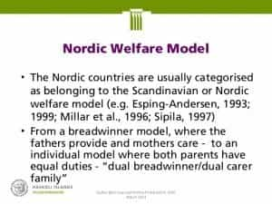

Quintus can be found at qcurtius.com. He is the author of the books On Duties, Thirty Seven, Sallust: The Conspiracy Of Catiline And The War Of Jugurtha, and other books. His work has been reviewed at Taki's Magazine. He can be followed on Twitter


A recent article on CNN’s site painted a rosy, rapturous picture of Iceland as a nation that has finally figured out a way to survive and prosper without marriage. The article was entitled, “Is Marriage Outdated In Iceland?”, and it typifies the kind of agenda-shaping propaganda that passes for journalism in the mainstream media.
We are first presented with a startling statistic: 67% of children in Iceland are born to parents who are unmarried. Then a woman is interviewed, who gushes:
You have this horrible term in English, ‘broken families,’ which basically means just if you get divorced, then something’s broken. But that’s not the way it is in Iceland at all. We live in such a small and secure environment, and the women have so much freedom. So you can just, you can choose your life.
Bryndis, we are told, has three kids with two partners and “not a drop of shame or regret.” What is left unsaid, of course is the fact that this paradise on earth is made possible by special confluence of factors that would not be possible in most other countries.
To begin with, the entire country has a population of only 320,000 people. Everyone generally knows who is who, and a lot can be deduced just by knowing what part of the island a person is from. So when the statistic of “67% of children born outside of marriage” is bandied about, we must also remember that the people of the country have a degree of consanguinity and homogeneity that not even Japan or Korea can match.
Iceland runs almost completely on renewable energy (geothermal), due to the fact that it sits atop an area of extensive volcanic activity. No other country can say this. The result is that the country does not need to spend the huge sums that other countries do on petroleum refinement and importation. Citizens and the government have to spend very little on electricity and hot water. The country has no external enemies and, as a consequence, spends nothing on defense or weapons systems.
Also left unsaid—for reasons I will let the reader reflect on—is the fact that this marriage-less paradise is made possible only by the fact that Iceland has one of the most extensive welfare systems in the world. Even the recent financial crisis has left the welfare system relatively unaffected. According to one recent study,
Family care policy has, comparatively, been minimally affected by the financial crisis. However, there have been some changes to generous parental leave policy. The ceiling on parental leave payments was lowered in July 2009 from 400,000 ISK [Icelandic kroner] to 350,000 ISK, and then further decreased to 300,000 ISK in December 2009. To compensate, the allowable timeframe for parental leave was extended from 18 months to 36 months. Additionally, payments have been increased to 80 percent of earnings for earnings lower than 200,000 ISK and 75 percent of earnings over 200,000 ISK. Thus policies on family care have retained their socio-democratic character despite cuts in government expenditures necessitated by the economic crisis.
Actually, it’s even better for Icelanders: according to the CNN article, Iceland guarantees “some of the most generous parental leave in the world, nine months at 80% pay (three months for mom, three for dad and another three to be divvied up).”

So it’s not hard to see why it’s so easy to “choose your own life” when the government is paying for everything, your country has no external threats, spends nothing on defense, and you are an isolated island in the middle of the North Atlantic.
I say all this not out of any desire to criticize Iceland. I have much respect for the fact that they value their heritage and culture, and take real steps to ensure that their language retains its distinctive and unadulterated character. They’ve found a system that works for them, and they are doing what is in their best interests. But to imply that their system can and should be duplicated in other places would be misleading.
Saving the whales: Iceland’s biggest problem
The coded message here, of course, is that marriage is dead, and the government (that is, everyone else) should pay to support children born out of wedlock. This is the paradigm shift that the mainstream media has been creeping towards for some time now.
It is impossible to deny that Iceland’s social institutions and customs are impossible to apply to the rest of the world. For the reasons given above, a “no marriage” policy is possible only because Icelandic women have found a far more wealthy “husband”: the government. Who needs a husband when Big Daddy government is there to pay for everything?
I question the motives of news outlets like CNN when they deliberately fail to disclose material information when it comes to reporting on social issues. The impression given by the article—and the message that no doubt the average reader will take away—is that marriage is unnecessary, family is unnecessary, and everyone can just do whatever they want. One can only conclude that American media outlets are deliberately trying to undermine traditional social institutions by presenting materially false or misleading information.
This is hardly new news to readers of the alternative media. But it is important to document examples of mainstream media disinformation, so ensure that agendas and biases are placed squarely on display.
Read More: Why Creating Outgroups Manufactures Outrage